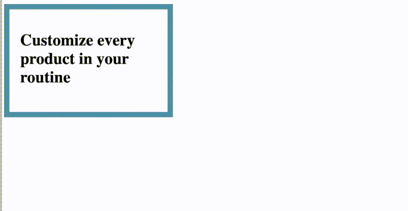

<!DOCTYPE html>
<html lang="en">
  <head>
    <meta charset="utf-8" />
    <meta name="viewport" content="width=device-width, initial-scale=1.0, maximum-scale=1.0, user-scalable=no" />

    <title></title>
    <link rel="stylesheet" href="dist/reveal.css" />
    <link rel="stylesheet" href="dist/theme/blood.css" id="theme" />
    <link rel="stylesheet" href="plugin/highlight/monokai.css" />
	<link rel="stylesheet" href="css/layout.css" />
	<link rel="stylesheet" href="plugin/customcontrols/style.css">

    <link rel="stylesheet" href="css/customStyles.css" />

    <script defer src="dist/fontawesome/all.min.js"></script>

	<script type="text/javascript">
		var forgetPop = true;
		function onPopState(event) {
			if(forgetPop){
				forgetPop = false;
			} else {
				parent.postMessage(event.target.location.href, "app://obsidian.md");
			}
        }
		window.onpopstate = onPopState;
		window.onmessage = event => {
			if(event.data == "reload"){
				window.document.location.reload();
			}
			forgetPop = true;
		}

		function fitElements(){
			const itemsToFit = document.getElementsByClassName('fitText');
			for (const item in itemsToFit) {
				if (Object.hasOwnProperty.call(itemsToFit, item)) {
					var element = itemsToFit[item];
					fitElement(element,1, 1000);
					element.classList.remove('fitText');
				}
			}
		}

		function fitElement(element, start, end){

			let size = (end + start) / 2;
			element.style.fontSize = `${size}px`;

			if(Math.abs(start - end) < 1){
				while(element.scrollHeight > element.offsetHeight){
					size--;
					element.style.fontSize = `${size}px`;
				}
				return;
			}

			if(element.scrollHeight > element.offsetHeight){
				fitElement(element, start, size);
			} else {
				fitElement(element, size, end);
			}		
		}


		document.onreadystatechange = () => {
			fitElements();
			if (document.readyState === 'complete') {
				if (window.location.href.indexOf("?export") != -1){
					parent.postMessage(event.target.location.href, "app://obsidian.md");
				}
				if (window.location.href.indexOf("print-pdf") != -1){
					let stateCheck = setInterval(() => {
						clearInterval(stateCheck);
						window.print();
					}, 250);
				}
			}
	};


        </script>
  </head>
  <body>
    <div class="reveal">
      <div class="slides"><section  data-markdown><script type="text/template">

## intro to
# **CSS**</script></section><section  data-markdown><script type="text/template">
This course assumes that you <strong>know at least a little HTML</strong>,  
and you have <strong>little or no knowledge of CSS</strong>.

Please tell me if that's not the case  
so I can adjust or fill the gaps during the session.
</script></section><section  data-markdown><script type="text/template">### Quick overview
- What is CSS? Where do we write it?
- Anatomy of a CSS rule
- Debugging CSS
- CSS stylesheets, CSS Reset
- Custom Properties
- We'll work with: 
	- Images
	- Layout
	- Color
	- Typography
- Hint at what the Cascade is
- Teasing, and resources to learn more</script></section><section ><section data-markdown><script type="text/template"><!-- .slide: data-auto-animate="true" -->
### what is CSS
## 💅

**CSS** is a language used to declare **styling rules**  
for an HTML document (a web page).
</script></section><section data-markdown><script type="text/template"><!-- .slide: data-auto-animate class="minor-h3-title" -->
### what is CSS
You can use it for:
- &shy;<!-- .element: class="fragment" data-fragment-index="1" -->**typography**
- &shy;<!-- .element: class="fragment" data-fragment-index="2" -->**color** (text, background, gradients, etc.)
- &shy;<!-- .element: class="fragment" data-fragment-index="3" -->**layout** (columns, grids, responsive, etc.)
- &shy;<!-- .element: class="fragment" data-fragment-index="5" -->**animation** 
- &shy;<!-- .element: class="fragment" data-fragment-index="5" -->and more... 
</script></section><section data-markdown><script type="text/template"><!-- .slide: data-auto-animate class="minor-h3-title" -->
### what is CSS

It looks like this:

```css
body {
	font-size: 16px;
}


div {
	height: 50px;
	background-color: beige;
}


.selected {
	color: #ffdd42;
	text-shadow: 5px 5px #558ABB;
}
```
</script></section><section data-markdown><script type="text/template"><!-- .slide: data-auto-animate class="minor-h3-title" -->
### what is CSS
#### **Hated** by a lot of programmers
<!-- .element: style="text-align: left" -->
- Not considered as a real programming language
- Mostly visual feedback (+ inspector) <!-- .element: class="fragment" -->
- Some aspects are hard (class name conflicts, specificity, implicit rules, etc.) <!-- .element: class="fragment" -->
<br></br>

#### **Loved** by visual people
<!-- .element: style="text-align: left" class="fragment" -->
- You can do visual stuff with it ✨ 🌈  <!-- .element: class="fragment" -->

<div class="block">

<!-- .element: class="fragment" -->
- It *looks* accessible and easy to write (and it *is* for simple projects) 
</div>


</script></section></section><section  data-markdown><script type="text/template">
Let's write some code!

<br></br>
###### you can start with [this code](https://codesandbox.io/s/prose-css-beginner-course-mfyjps?file=/index.html) to follow along
###### or write your own stuff
</script></section><section ><section data-markdown><script type="text/template"><!-- .slide: data-auto-animate="true" -->
### **where** to write CSS

It's possible to write CSS in an HTML file using **\<style\>** tags.

```html
<style>
p {
	width: 50px;
	color: orange;
}
</style>

<p>My content is awesome</p>
```

However... <!-- .element: class="fragment" -->
</script></section><section data-markdown><script type="text/template">
<!-- .slide: data-auto-animate  class="minor-h3-title" -->
### **where** to write CSS

Most of the time, **.css** files are linked in the **\<head\>** of the **.html** file<!-- .element: ="fragment" -->

```html
<head>
	<link rel="stylesheet" href="path/to/my-styles.css">
</head>
```

because we want **separation of concerns**
</script></section><section data-markdown><script type="text/template">
<!-- .slide: class="minor-h3-title" -->
### separation of concerns
#### The "classic" way
<!-- .element: style="opacity: 0.3" -->

<split >

<div class="block">

<!-- .element: class="fragment" -->
- **HTML** declares the **content**.
```html
<p>My content is awesome</p>
```
</div>


<div class="block">

<!-- .element: class="fragment" -->
- **CSS** creates *rules* to **style** and present this content.
```css
p {
	width: 50px;
	color: orange;
}
```
</div>


<div class="block">

<div class="block">

<!-- .element: style="position: absolute; transform: rotate(7deg) translate(150px, -40px)" class="fragment fade-in-then-out" -->
- **JS** breaks your website
```javascript
console.log = () => {}
```
</div>


<div class="block">

<!-- .element: class="fragment" -->
- **JS** adds **interactivity**
```javascript
window.confirm("Do you really want to close this popup?")
```
</div>


</div>


</split>
</script></section></section><section ><section data-markdown><script type="text/template"><!-- .slide: data-auto-animate="true" -->
### Anatomy of a CSS **rule**
## 👁👄👁</script></section><section data-markdown><script type="text/template"><!-- .slide: data-auto-animate class="minor-h3-title" -->
### Anatomy of a CSS **rule**
```css
selector {
	property: value;
}
```
</script></section><section data-markdown><script type="text/template"><!-- .slide: data-auto-animate  class="minor-h3-title" -->
### Anatomy of a CSS **rule**
#### Selector syntax
Depends on the HTML
</script></section><section data-markdown><script type="text/template"><!-- .slide: data-auto-animate="true" -->
#### Selector syntax
<!-- .element: style="opacity: 0.3" -->

<div class="block">

<!-- .element: style="text-align: left" -->
select by **HTML tag** 
```css
div { 
	/* ... */
}
```

select by **class**
```css
.my-class { 
	/* ... */
}
```

select by **id**
```css
#my-id {
	/* ... */
}
```
</script></section><section data-markdown><script type="text/template"><!-- .slide: data-auto-animate="true" -->
#### Selector syntax
<!-- .element: style="opacity: 0.3" -->

<div class="block">

<!-- .element: style="text-align: left" -->
select by **tag** and **class**
```css
h1.my-class {
	/* ... */
}
```
</script></section><section data-markdown><script type="text/template"><!-- .slide: data-auto-animate="true" -->
#### Selector syntax
<!-- .element: style="opacity: 0.3" -->

<div class="block">

<!-- .element: style="text-align: left" -->
have a single rule for **several** selectors
```css
.first, .second, #third, div {
	/* ... */
}

.first,
.second,
#third,
h2 {
	/* ... */
}
```

select if **child** of ..
```css
.parent-class .child-class {
	/* ... */
}
```
</script></section><section data-markdown><script type="text/template"><!-- .slide: data-auto-animate="true" -->
#### Selector syntax
<!-- .element: style="opacity: 0.3" -->

##### Combinators
<div class="block">

<!-- .element: style="text-align: left" -->
select if **direct child** of ..
```css
.parent-class > .child-class {
	/* ... */
}
```

select according to **previous sibling** element
```css
.first + .second {
	/* ... */
}
```
</script></section><section data-markdown><script type="text/template"><!-- .slide: data-auto-animate="true" -->
#### Selector syntax
<!-- .element: style="opacity: 0.3" -->

<div class="block">

<!-- .element: style="text-align: left" -->
select the **parent** element (brand new and super powerful ✨)
```css
.first:has(.second) {
	/* ... */
}
```
</script></section><section data-markdown><script type="text/template"><!-- .slide: data-auto-animate="true" -->
#### Selector syntax
<!-- .element: style="opacity: 0.3" -->

<div class="block">

<!-- .element: style="text-align: left" -->
select if **n<sup>th</sup>** element
```css
div:nth-child(3) {
	/* ... */
}

```

select if is an **only child**
```css
div:only-child {
	/* ... */
}
```

also **`:last-child`**,  
and similarly **`:nth-of-type()`**, **`:last-of-type`**, **`:only-of-type`**, etc.
</script></section><section data-markdown><script type="text/template"><!-- .slide: data-auto-animate="true" -->
#### Selector syntax
<!-- .element: style="opacity: 0.3" -->

<div class="block">

<!-- .element: style="text-align: left" -->
select by **attribute** (such as **`<div my-attribute>`** or **`<div my-attribute="foo">`** )
```css
div[my-attribute] {
	/* ... */
}
```

select by **attribute value** (such as **`<div my-attribute="bar">`**)
```css
div[my-attribute="bar"] {
	/* ... */
}
```

</script></section></section><section ><section data-markdown><script type="text/template"><!-- .slide: data-auto-animate="true" -->
### Sizing things
## 📐📏
</script></section><section data-markdown><script type="text/template"><!-- .slide: data-auto-animate class="minor-h3-title" -->
### Sizing things
<p style="line-height: 0" class="reset-paragraph image-paragraph"></img></p>

</script></section><section data-markdown><script type="text/template"><!-- .slide: data-auto-animate class="minor-h3-title" -->
### Sizing things
A very simple example of sizing an element:
```css
.my-class {
	width: 75%; /* will take 75 percents of its parent's width */
}
```
</script></section><section data-markdown><script type="text/template"><!-- .slide: data-auto-animate class="minor-h3-title" -->
### Sizing things
#### Units
(relative or absolute)
- **px** CSS pixels (NOT the device's pixels)
- **em**, **rem**, **ch** (typography)
- **%** percents
- **vm**/**vh** view height/width units
- and more...
</script></section><section data-markdown><script type="text/template"><!-- .slide: data-auto-animate class="minor-h3-title" -->
### Sizing things
#### The box model
<p style="line-height: 0" class="reset-paragraph image-paragraph"></img></p>

##### width/height, padding, border, margin
</script></section><section data-markdown><script type="text/template"><!-- .slide: data-auto-animate class="minor-h3-title" -->
### Sizing things
#### The box model
<p style="line-height: 0" class="reset-paragraph image-paragraph"></img></p>

##### box-sizing
**content-box** vs **border-box**
</script></section><section data-markdown><script type="text/template"><!-- .slide: data-auto-animate class="minor-h3-title" -->
### Sizing things
#### ...it's complicated
The elements' sizes are related to the **layout** (cf. dedicated section),   
and the other elements on the page.

...Sizes can be absolute or relative, values can have a min and a max, the web page document has an infinite height, responsive is a huge topic, zoom level and accessibility, etc...

</script></section></section><section  data-markdown><script type="text/template">
<!-- .slide: data-auto-animate="true" -->
### Centering things
Notoriously **very hard thing** to do in CSS. 😂  
It used to be, but it's a little **easier now**.

They are different ways to do it.  
For elements with a given **width**, it can be as simple as:
```css
.my-class {
	 margin-inline: auto;
	 /* or, similarly: */
	 margin-left: auto;
	 margin-right: auto;
 }
```
</script></section><section ><section data-markdown><script type="text/template"><!-- .slide: data-auto-animate="true" -->
### **Debugging** your CSS
## 🧐
</script></section><section data-markdown><script type="text/template"><!-- .slide: data-auto-animate class="minor-h3-title" -->
### **Debugging** your CSS
You will get **confused** by CSS.  
Remember, it can be an opportunity to **learn**! 😄   

Here are a few tips:
</script></section><section data-markdown><script type="text/template"><!-- .slide: data-auto-animate class="minor-h3-title" -->
### **Debugging** your CSS

- Work with a **fast feedback loop** (e.g. [REPL](https://en.wikipedia.org/wiki/Read%E2%80%93eval%E2%80%93print_loop))
- <strong>Autocomplete</strong> is your friend
<br></br>

<div class="block">

<!-- .element: class="fragment" -->
- => Use **devtools** (in the browser)
<br></br>
</div>

 

<div class="block">

<!-- .element: class="fragment" -->
- Make the stuff you are debugging **pop up** (e.g. **`border: 2px solid red;`**)
- Remove noise (keep only the relevant CSS properties)
<br></br>
</div>


<div class="block">

<!-- .element: class="fragment" -->
#### When lost
- Try one thing at a time
- Try to modify parent/sibling elements' properties that could be related
- Ask a coworker 😂
</div>

 
</script></section><section data-markdown><script type="text/template"><!-- .slide: data-auto-animate class="minor-h3-title" -->
### **Debugging** your CSS

For example, we can add a rule with selectors to display  
a **border** around the elements we want to visualize:
```css
.container > *:not(ul),
ul > * {
	border: 2px solid DeepPink;
}
```
</script></section></section><section ><section data-markdown><script type="text/template"><!-- .slide: data-auto-animate="true" -->
### CSS Reset
```html
	<link rel="stylesheet" href="css/reset.css">
```
The **reset.css** stylesheet is some boilerplate code that **removes the browser's default styles** (which are different from browser to browser).

For example it removes the default **list-style** attribute and the **list's padding**/**margin**.
</script></section><section data-markdown><script type="text/template"><!-- .slide: data-auto-animate class="minor-h3-title" -->
### CSS Reset
in the **\<head\>**, we can link various stylesheets:
```html
	<link rel="stylesheet" href="css/reset.css">
	<link rel="stylesheet" href="css/fonts.css">
	<link rel="stylesheet" href="css/my-styles.css">
```
The order is important here.
</script></section></section><section ><section data-markdown><script type="text/template"><!-- .slide: data-auto-animate="true" -->
### Images
## 🖼
</script></section><section data-markdown><script type="text/template"><!-- .slide: data-auto-animate class="minor-h3-title" -->
### Images
You can add images to the web page using **CSS** or **HTML**
</script></section><section data-markdown><script type="text/template"><!-- .slide: data-auto-animate class="minor-h3-title" -->
### Images
CSS
```css
.my-class {
	/* image added for decorative purposes (aesthetic) */
	background-image: url('path/to/image.png');
}
```
HTML
```html
<!-- image which adds meaning to the page (semantic) -->

```
In HTML, use **alt** attribute for accessibility purposes.  
With an **empty string** in the alt, the browser understands it's a **decorative** image, and the screen-readers will ignore it.
</script></section><section data-markdown><script type="text/template"><!-- .slide: data-auto-animate class="minor-h3-title" -->
### Images
You can tweak how a **background-image** is displayed  
using **background-[...]** properties.
```css
.my-class {
	background-image: url('path/to/image.png');
	background-size: cover;
	background-position: 25% 75%;
}
```
Similarly, there are specific CSS rules for **\** tags,  
like **object-fit** or **object-position**, for example.
```css
.my-img-element {
	width: 50px;
	/* ... */
	object-fit: cover;
	object-position: 10% 50%;
}
```

</script></section></section><section ><section data-markdown><script type="text/template"><!-- .slide: data-auto-animate="true" -->
### Color
## 🎨</script></section><section data-markdown><script type="text/template"><!-- .slide: data-auto-animate class="minor-h3-title" -->
### Color
Most common properties that use color are:
- **`color`** for text color
- **`background-color`**
</script></section><section data-markdown><script type="text/template"><!-- .slide: data-auto-animate class="minor-h3-title" -->
### Color
There are a lot of different ways to write color values:
- hexadecimal => **`#0033ff`** or **`#03f`** (6 or shorthand 3 digits)
- RGB (Red, Green, Blue) => **`rgb(0, 51, 255)`**
- HSL (Hue, Saturation, Lightness) => **`hsl(228, 100%, 50%)`**
- and [much much more](https://www.smashingmagazine.com/2021/11/guide-modern-css-colors/)

```css
.green-text {
	color: #00e300;
}

.black-text {
	color: rgb(0, 0, 0);
}

.red-text-1 {
	color: rgb(224 31 31);
}

.red-text-2 {
	color: hsl(0, 76%, 50%);
}
```
</script></section><section data-markdown><script type="text/template"><!-- .slide: data-auto-animate class="minor-h3-title" -->
### Color
You can also put **alpha** (transparency) with a fourth value.

```css
.green-transparent-text {
	color: #00e30088;
}

.black-transparent-text {
	color: rgb(0, 0, 0, 0.5);
}

.red-transparent-text-1 {
	color: rgb(224 31 31 / 50%);
}

.red-transparent-text-2 {
	color: hsl(0, 76%, 50%, 0.5);
}
```
</script></section><section data-markdown><script type="text/template"><!-- .slide: data-auto-animate class="minor-. 3-title" -->
### Color
If you want to learn more about color in general and why we need so many ways to describe it, here is a very good resource (4 chapters):
https://programmingdesignsystems.com/color/a-short-history-of-color-theory/index.html#a-short-history-of-color-theory-xZzRFOZ
</script></section></section><section ><section data-markdown><script type="text/template"><!-- .slide: data-auto-animate="true" -->
### Typography
## 🖋
</script></section><section data-markdown><script type="text/template"><!-- .slide: data-auto-animate class="minor-h3-title" -->
### Typography
Example of a few properties:
```css
.my-class {
	font-family: Times, Serif;
	font-size: 24px;
	font-weight: bold;
	letter-spacing: 0.05em;
	line-height: 1.2em; 
	text-transform: uppercase;
	text-align: center;
	/* ... */
}
```
</script></section><section data-markdown><script type="text/template"><!-- .slide: data-auto-animate class="minor-h3-title" -->
### Typography
**ch** unit == the width of the 0 character for the current font.  
This is useful for approximating the [optimal line-length for readability](https://practicaltypography.com/line-length.html).
```css
.my-column-text {
	width: 45ch;
}
```</script></section></section><section ><section data-markdown><script type="text/template"><!-- .slide: data-auto-animate="true" -->
### Custom properties
## 🧠</script></section><section data-markdown><script type="text/template"><!-- .slide: data-auto-animate class="minor-h3-title" -->
### Custom properties
Why ?
- Variables instead of hard-coded values:
	- Stay DRY
	- Add meaning
	- Easier to debug
</script></section><section data-markdown><script type="text/template">
#### Declare a variable
```css
:root {
	--global-variable: 12px;
}
```
#### Use it
```css
.my-class {
	width: var(--global-variable);
}
```
</script></section></section><section ><section data-markdown><script type="text/template"><!-- .slide: data-auto-animate="true" -->
### Layout
## 🗺</script></section><section data-markdown><script type="text/template"><!-- .slide: data-auto-animate class="minor-h3-title" -->
### Layout
In CSS, layout is about **positioning** and **sizing** elements  
relative to **the page**, **each others**, and **their content**.

It's a complex topic and we won't cover all of it.
</script></section><section data-markdown><script type="text/template"><!-- .slide: data-auto-animate class="minor-h3-title" -->
### Layout
#### The **flow** of the document
A HTML page is a **document**. It's supposed to be read from top to bottom, left to right (or whichever [direction](https://developer.mozilla.org/en-US/docs/Web/CSS/direction) relevant to the language used).

By default elements are **juxtaposed one after another** according to this. You can **manipulate the flow** of a page or **remove elements from the flow** in different ways.
</script></section><section data-markdown><script type="text/template"><!-- .slide: data-auto-animate class="minor-h3-title" -->
### Layout
#### the **display** property
The **display** property can be **block**, **inline**, **flex**, **grid**, **none**, or some combination of these.
</script></section><section data-markdown><script type="text/template"><!-- .slide: data-auto-animate class="minor-h3-title" -->
### Layout
#### the **display** property
##### **block**
<!-- .element: style="position: relative; left: -7ch; top: 3.4ch" -->
###### vs
##### **inline**
<!-- .element: style="position: relative; left: 7ch; top: -3.4ch" -->
<p style="line-height: 0" class="reset-paragraph image-paragraph"></img></p>
</script></section><section data-markdown><script type="text/template"><!-- .slide: data-auto-animate class="minor-h3-title" -->
### Layout
#### the **display** property
##### **block**
A **block** element has margins that take **all of the horizontal space**.  
By default **`<div>`**, **`<footer>`**, **`<nav>`**, etc. are **display: block**

----
##### **inline**
An **inline** element behaves **similarly to a portion of text in a paragraph**.  
By default **`<span>`**, **`<a>`** (a link), **``** (an image!!!), etc. are **display: inline**
</script></section><section data-markdown><script type="text/template"><!-- .slide: data-auto-animate class="minor-h3-title" -->
### Layout
#### the **display** property
##### **flex** 💪
<!-- .element: style="position: relative; left: -7ch; top: 3.4ch" -->
###### vs
##### **grid** 🏢
<!-- .element: style="position: relative; left: 7ch; top: -3.4ch" -->
<p style="line-height: 0" class="reset-paragraph image-paragraph"></img></p>
</script></section><section data-markdown><script type="text/template"><!-- .slide: data-auto-animate class="minor-h3-title" -->
### Layout
#### the **display** property
##### **flex** 💪
To **organize children elements** with a linear (**1D**) mindset.  
Interactive guides: [playful (to the point)](https://flexboxfroggy.com/) or [thorough (in depth)](https://www.joshwcomeau.com/css/interactive-guide-to-flexbox/)

----
##### **grid** 🏢
To **organize children elements** with a grid (**2D**) mindset.  
Learn with: [CSS Grid Generator](https://cssgrid-generator.netlify.app/) or [videos](https://www.youtube.com/watch?v=FEnRpy9Xfes&list=PLbSquHt1VCf1x_-1ytlVMT0AMwADlWtc1)
</script></section><section data-markdown><script type="text/template"><!-- .slide: data-auto-animate class="minor-h3-title" -->
### Layout
#### the **position** property
```css
.my-class {
	position: absolute;
	left: 50%;
	right: 50%;
}
```
The **position** attribute can be **relative**, **absolute**, **fixed** or **sticky**
They can (or must) be used with other attributes **top**, **bottom**, **right** and **left**.
</script></section><section data-markdown><script type="text/template"><!-- .slide: data-auto-animate class="minor-h3-title" -->
### Layout
The **transform** attribute  
helps you **translate**, **scale** and/or **rotate** an element.  
It is very useful for animation.
</script></section></section><section ><section data-markdown><script type="text/template"><!-- .slide: data-auto-animate="true" -->
### Animations & interactions
## 🎭
</script></section><section data-markdown><script type="text/template">
<!-- .slide: data-auto-animate="true" -->
### Animations & interactions
## 🎭
... We would have to make a **dedicated workshop**  
for animation and/or interaction in CSS (+ JS ?)  
(**which I would love to make** 😁)
</script></section></section><section ><section data-markdown><script type="text/template">
<!-- .slide: data-auto-animate="true" -->
### <strong>CSS</strong> stands for...
## 🤓</script></section><section data-markdown><script type="text/template">
<!-- .slide: data-auto-animate="true" -->
### **C**ascading **S**tyle **S**heets
#### The cascade 
The styling rules are applied with an algorithm called the **Cascade**.  
You can read about it [here](https://developer.mozilla.org/en-US/docs/Web/CSS/Cascade) if you want to get a headache  
(it's a pretty advanced topic)

<p style="line-height: 0" class="reset-paragraph image-paragraph"></img></p>

</script></section><section data-markdown><script type="text/template">
#### What is applied when there are different rules for the same element/property?
## 👯 🤔
This is a difficult question,  
but for most cases it comes down to two things:
- What **selector** has the most **specificity**
- and if it's the same, what rule is **declared last**.
</script></section><section data-markdown><script type="text/template">
#### What about **`!important`** ?
## 💩
Please avoid using this if possible.  
It can make the code much harder to maintain.

You can try to use **layers** instead ! (brand new CSS feature ✨)
</script></section></section><section  data-markdown><script type="text/template">### **Thank you**
## 🙏

##### Here is [the code](https://codesandbox.io/s/prose-css-beginner-course-finished-urxbn6?file=/index.html) to the "completed" project
Feel free to **reach out** if you want to know more.  
I would be very happy to have your **feedbacks** on this course.

</script></section><section  data-markdown><script type="text/template">### **Learn more**
## ✨
#### Documentation
<!-- .element: style="text-align: left" -->
- [MDN CSS reference](https://developer.mozilla.org/en-US/docs/Web/CSS/Reference)
<br ></br>

#### Tutorials & articles
<!-- .element: style="text-align: left" -->
-  [css-tricks.com](https://css-tricks.com/)
-  [web.dev/learn/css](https://web.dev/learn/css)
-  [Kevin Powell's Youtube Channel](https://www.youtube.com/kepowob/featured) 
-  [Jen Simmons' Youtube Channel](https://www.youtube.com/c/LayoutLand/videos) + conferences (mostly CSS-grid)
-  [La cascade](https://la-cascade.io/) 🇫🇷 (English articles translated in French)
</script></section></div>
    </div>

    <script src="dist/reveal.js"></script>

    <script src="plugin/markdown/markdown.js"></script>
    <script src="plugin/highlight/highlight.js"></script>
    <script src="plugin/zoom/zoom.js"></script>
    <script src="plugin/notes/notes.js"></script>
    <script src="plugin/math/math.js"></script>
	<script src="plugin/mermaid/mermaid.js"></script>
	<script src="plugin/chart/chart.min.js"></script>
	<script src="plugin/chart/plugin.js"></script>
	<script src="plugin/customcontrols/plugin.js"></script>

    <script>
      function extend() {
        var target = {};
        for (var i = 0; i < arguments.length; i++) {
          var source = arguments[i];
          for (var key in source) {
            if (source.hasOwnProperty(key)) {
              target[key] = source[key];
            }
          }
        }
        return target;
      }

	  function isLight(color) {
		let hex = color.replace('#', '');

		// convert #fff => #ffffff
		if(hex.length == 3){
			hex = `${hex[0]}${hex[0]}${hex[1]}${hex[1]}${hex[2]}${hex[2]}`;
		}

		const c_r = parseInt(hex.substr(0, 2), 16);
		const c_g = parseInt(hex.substr(2, 2), 16);
		const c_b = parseInt(hex.substr(4, 2), 16);
		const brightness = ((c_r * 299) + (c_g * 587) + (c_b * 114)) / 1000;
		return brightness > 155;
	}

	var bgColor = getComputedStyle(document.documentElement).getPropertyValue('--r-background-color').trim();

	if(isLight(bgColor)){
		document.body.classList.add('has-light-background');
	} else {
		document.body.classList.add('has-dark-background');
	}

      // default options to init reveal.js
      var defaultOptions = {
        controls: true,
        progress: true,
        history: true,
        center: true,
        transition: 'default', // none/fade/slide/convex/concave/zoom
        plugins: [
          RevealMarkdown,
          RevealHighlight,
          RevealZoom,
          RevealNotes,
          RevealMath.MathJax3,
		  RevealMermaid,
		  RevealChart,
		  RevealCustomControls,
        ],


    	allottedTime: 120 * 1000,

		mathjax3: {
			mathjax: 'plugin/math/mathjax/tex-mml-chtml.js',
		},
		markdown: {
		  gfm: true,
		  mangle: true,
		  pedantic: false,
		  smartLists: false,
		  smartypants: false,
		},

		customcontrols: {
			controls: [
			]
		},
      };

      // options from URL query string
      var queryOptions = Reveal().getQueryHash() || {};

      var options = extend(defaultOptions, {"width":960,"height":700,"margin":0.04,"controls":true,"progress":true,"slideNumber":false,"transition":"slide","transitionSpeed":"default"}, queryOptions);
    </script>

    <script>
      Reveal.initialize(options);
    </script>
  </body>
</html>
